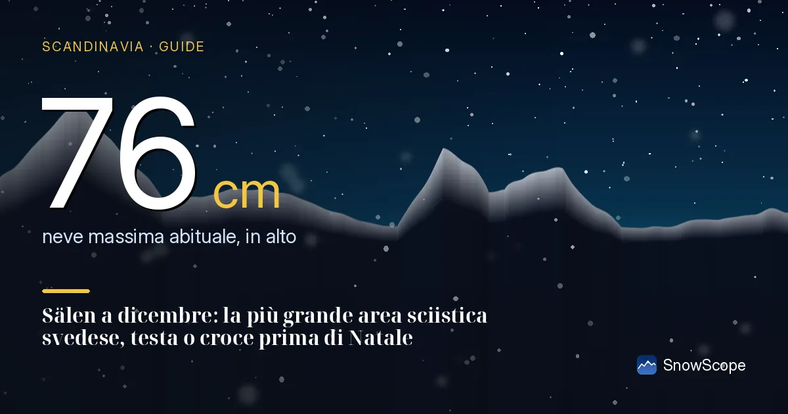

Sälen a dicembre: la più grande area sciistica svedese, testa o croce prima di Natale
Sälen è dove buona parte della Svezia impara a sciare: 80 km di piste mappate e 96 impianti su colline basse e arrotondate. Per dicembre i nostri 46 inverni di storico sono schietti. In un tipico 15 dicembre l'area ha 28 cm, e nella settimana dal 15 al 21 dicembre solo il 48 % degli inverni aveva almeno 30 cm.
Le previsioni neve in tempo reale per Sälen nell'app SnowScopeAltezza neve, allerte powder e mappa 3D, gratis.
Dicembre, ieri e oggi
Gli impianti di Sälen vanno da 568 m a 886 m, e le colline sono così morbide che il nostro storico dà un solo valore per tutta l'area. Quel valore è sceso: la media di dicembre è passata da 33 cm nei primi 15 inverni a 24 cm negli ultimi 15, e la quota di settimane di Natale con 30 cm è calata dall'80 % al 47 %.
L'inverno scorso è stato un esempio chiaro: 16 cm il 15 dicembre e 4 cm il 24 dicembre.


Le settimane che rendono ancora
La settimana di Natale è la scommessa migliore, con il 61 % degli inverni ad almeno 30 cm. Prima le probabilità sono del 35 % in ciascuna delle prime due settimane e del 48 % dal 15 al 21 dicembre. Il primo giorno abituale con 30 cm è il 17 dicembre, appena prima delle vacanze.
A dicembre Sälen non è mai profonda (solo l'11 % delle settimane di Natale aveva 60 cm o più), ma raramente è scoperta: in nessuno dei nostri 46 inverni il terreno era scoperto il 15 dicembre. Senza il lavoro della località sulle piste, però, un manto sottile è il quadro normale di dicembre.
Il prezzo della settimana
Gli skipass di Sälen sono venduti a prezzi dinamici nello shop online ufficiale del gestore. Il 13 novembre 2026 non siamo riusciti a leggere un importo fisso sulla pagina ufficiale, quindi non ne citiamo. Il prezzo cambierà con le vostre date; comprate presto e online.
Trysil negli stessi anni
Trysil, appena oltre il confine norvegese, è la scelta migliore di dicembre nei dintorni. La sua metà montagna (758 m) ha 44 cm in un tipico 15 dicembre, e l'83 % degli inverni aveva lì 30 cm nella settimana dal 15 al 21 dicembre. La sua vetta a 1109 m è più alta di qualsiasi punto di Sälen.
Anche Trysil ha perso neve negli anni, ma partendo più in alto: a Natale l'80 % degli ultimi 15 inverni aveva ancora 30 cm a metà montagna.
Consigli per prenotare
Se amate Sälen per la sua impronta familiare, andateci a fine dicembre o, meglio, a gennaio e febbraio. Se dicembre è l'unica opzione, guardate il bollettino neve in tempo reale della località una settimana prima, oppure proseguite fino a Trysil.
Consigli per sciatori
- Preferite la settimana di Natale alle date prima: il 61 % dei nostri inverni aveva allora 30 cm, contro il 35 % a inizio dicembre.
- Prenotate modificabile: negli ultimi inverni la quota di buone settimane di Natale è scesa al 47 %.
- Confrontate con Trysil prima di pagare: la sua metà montagna aveva 30 cm a metà dicembre nell'83 % degli inverni.
- Giornate brevi e freddo: organizzate lo sci attorno alle ore di luce e vestite bene i bambini.
Altre mappe (siti esterni)
Riferimenti e crediti
- Sälen: official lift-pass page of the operator (prices by date; no fixed price quoted), checked 13 November 2026 www.skistar.com/en/winter/skipass/buy-skipass/lift-pass-salen/
- Trysil: official lift-pass page of the operator (prices by date; no fixed price quoted), checked 13 November 2026 www.skistar.com/en/winter/skipass/buy-skipass/lift-pass-trysil/
Su questi numeri
Numeri della neve: storico neve SnowScope, 46 inverni passati (1980-81 - 2025-26) alle quote della località, corretto per la quota (una stima per un'area, non i bollettini della località); "buona neve" = 30 cm o più al suolo in media nella settimana. Mappa: la nostra altezza abituale al 15 dicembre distribuita sul terreno secondo la quota. Piste e impianti: mappatura OpenSkiMap. Skipass: listini ufficiali delle località, verificati il 13 novembre 2026; i prezzi possono cambiare.
Bollettini valanghe ufficiali: Lavinprognoser (Naturvårdsverket)
Cita questo articolo
Per ricerca, didattica o stampa: numeri e grafici sono liberamente riutilizzabili con licenza CC BY 4.0 citando così.
SnowScope (2026), Sälen a dicembre: la più grande area sciistica svedese, testa o croce prima di Natale, https://snowscope.app/blog/it/2026/11/salen-december-ski-trip-honest-snow-cost.html, consultato il 2026-11-14
SnowScope (Atlas Labs). (2026, November 14). Sälen a dicembre: la più grande area sciistica svedese, testa o croce prima di Natale. SnowScope snow reports. https://snowscope.app/blog/it/2026/11/salen-december-ski-trip-honest-snow-cost.html
BibTeX
@misc{snowscope2026salendecemberskitriphone,
author = {{SnowScope (Atlas Labs)}},
title = {Sälen a dicembre: la più grande area sciistica svedese, testa o croce prima di Natale},
year = {2026},
month = nov,
howpublished = {\url{https://snowscope.app/blog/it/2026/11/salen-december-ski-trip-honest-snow-cost.html}},
note = {Published 2026-11-14 19:44 UTC; accessed 2026-11-14}
}· CC BY 4.0 · Metodi, dati e strumenti →
Sälen: neve e temperatura per quota, quest'inverno vs lo scorso (strumenti) →
Segui Sälen
Gratis: un messaggio quando arriva la neve e il meteo ogni mattina.
Altri bollettini neve

Mt. Baker a dicembre: 46 in (116 cm) di neve a metà montagna in un tipico 15 dicembre, e uno skipass da 98,80 $ dal lunedì al giovedì, venduto solo in giornata alla cassa.

Montgenèvre ha 56 cm di neve abituale a dicembre alla base, offrendo agli sciatori del weekend una copertura migliore rispetto a Sestriere, oltre il confine.

Al Monterosa Ski lo skipass giornaliero online va da 40,00 a 71,00 EUR. A dicembre la neve è in quota: 124 cm abituali a 3.030 m, 6 cm a 1.207 m.